01Objectif
Découper le labo en zones isolées derrière un pare-feu, pour que chaque machine ne joigne que ce dont elle a besoin :
- mgmt (administration) : la seule zone d'où l'on administre les autres ;
- SRV (serveurs) : le futur contrôleur de domaine Active Directory ;
- CLI (postes clients) : le futur poste Windows ;
- DMZ : un futur service exposé, qui ne doit joindre aucune zone interne.
Le but n'est pas seulement de poser des règles, mais de prouver qu'elles font ce qui est écrit : un script d'essais compare chaque résultat à celui attendu, avant et après les règles, et signale tout écart. Ce script a d'ailleurs confirmé un vrai trou (la box de la maison joignable sur son adresse publique), corrigé puis revérifié.
Contraintes :
- ne rien casser sur le serveur, qui fait tourner le homelab n°1 (Docker, Traefik, Uptime Kuma, Ollama) : Docker et libvirt écrivent tous deux des règles de pare-feu ;
- aucune machine du labo ne doit joindre le réseau de la maison (box, ordinateurs), même par un détour ;
- budget de 0 € : OPNsense est libre et gratuit.
02Schéma et technologies
Internet
│
Freebox (maison)
│
┌───────────────────── Tour « labo » (Ubuntu Server 24.04) ──────────────────────┐
│ homelab n°1 (inchangé) virbr0 : NAT libvirt « default » │
│ │ │
│ WAN (vtnet0, DHCP) │
│ ┌───────────┴────────────┐ │
│ │ VM OPNsense 26.7 │ 1,5 Go de RAM, 2 vCPU │
│ │ .1 dans chaque zone │ refus par défaut │
│ └─┬────────┬───────┬───┬─┘ │
│ LAN (mgmt) │ SRV │ CLI │ │ DMZ │
│ 10.20.10.0/24 │ .20.0 │ .30.0 │ │ .40.0 /24 │
│ la tour : .254 (admin) │ │ │ │ │
│ test-srv test-cli test-dmz (VM jetables Debian 13) │
│ .20.10 .30.10 .40.10 │
│ │
│ La tour n'a une adresse que dans mgmt ; les ponts SRV, CLI, DMZ n'en ont pas. │
└────────────────────────────────────────────────────────────────────────────────┘| Rôle | Technologie |
|---|---|
| Pare-feu, routeur, DNS des zones | OPNsense 26.7.8_2 (FreeBSD 15.1), image « nano », VM KVM |
| Réseaux des zones | 4 réseaux libvirt isolés (un pont par zone, une carte virtio par zone sur OPNsense), décrits en XML dans le dépôt |
| DNS des zones | Unbound (intégré à OPNsense) |
| Machines d'essai | VM Debian 13 jetables, adresse fixe donnée par cloud-init (512 Mo chacune) |
| Essais | scripts shell : 81 essais avec résultat attendu, code de sortie non nul en cas d'écart |
| Filtrage côté serveur | rp_filter du noyau Linux, ufw, chaînes de libvirt |
Pourquoi une carte réseau par zone plutôt que des VLAN : tout se passe dans un seul serveur, avec des ponts virtuels ; un VLAN n'apporterait rien ici, sinon une couche de plus à déboguer. Les VLAN restent la bonne réponse sur un vrai réseau physique partagé.
03Configuration
Les réseaux des zones
Chaque zone est un réseau libvirt sans NAT ni routage : un simple pont, sans le DHCP ni le DNS de libvirt. Seule la zone mgmt donne une adresse à la tour (10.20.10.254), avec une route vers les autres zones à travers OPNsense :
<network>
<name>si-mgmt</name>
<bridge name='virbr-si-mgmt' stp='on' delay='0'/>
<dns enable='no'/>
<ip address='10.20.10.254' netmask='255.255.255.0'/>
<!-- La tour (administrateur) joint les autres zones en passant par OPNsense. -->
<route address='10.20.0.0' prefix='16' gateway='10.20.10.1'/>
</network>Les trois autres zones n'ont pas d'adresse côté tour : une VM d'une zone n'a donc aucun moyen de parler directement au serveur (essayé plus bas).
Avant et après la création des réseaux, j'ai comparé les règles de pare-feu du serveur (iptables-save) : libvirt n'ajoute que ses propres chaînes, rien n'a changé chez Docker ni chez ufw, et le homelab n°1 passe toujours ses tests.
OPNsense
L'image officielle a été vérifiée avant usage : signature de la liste des empreintes avec la clé publique d'OPNsense (identique sur le site et sur un miroir), puis empreinte SHA-256 de l'image. La VM a 5 cartes : WAN sur le NAT de libvirt, puis LAN (mgmt), SRV, CLI et DMZ.
À la console : affectation des interfaces, LAN en 10.20.10.1/24 sans DHCP, nouveau certificat pour l'interface web, mot de passe root changé. L'interface web n'est joignable que depuis mgmt, par un tunnel SSH depuis mon portable (ssh -N -L 8443:10.20.10.1:443 labo), et j'ai vérifié que l'empreinte du certificat affichée dans le navigateur est la même qu'à la console.

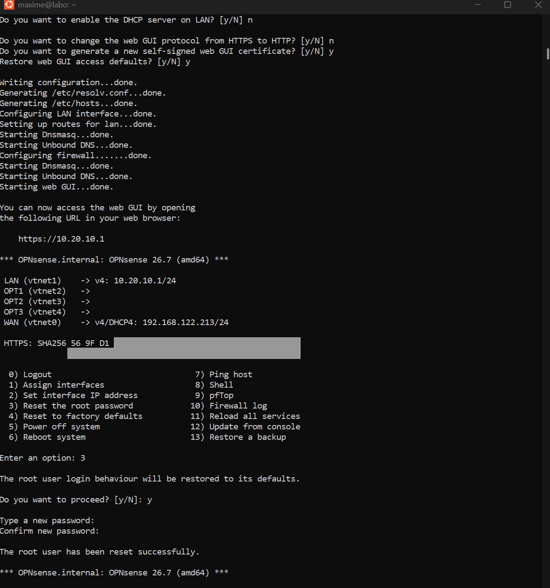

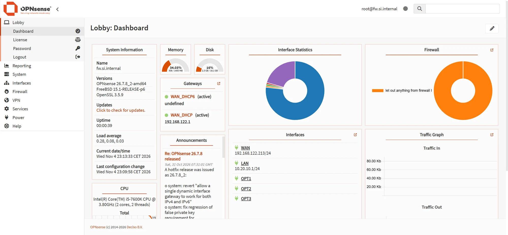

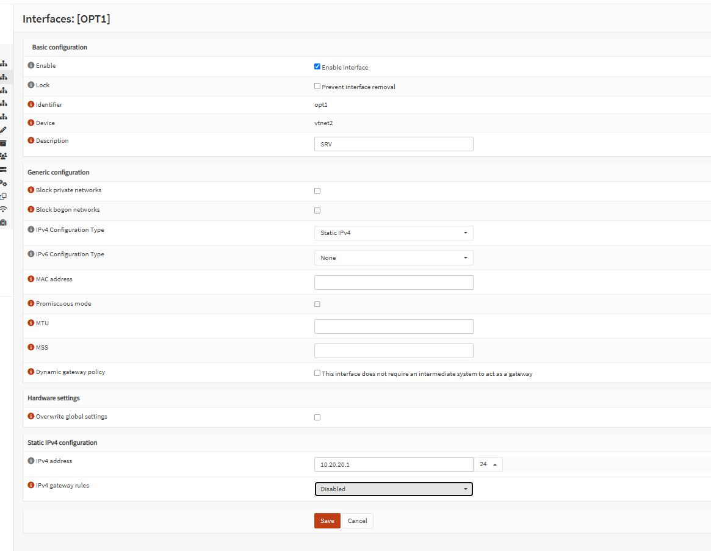

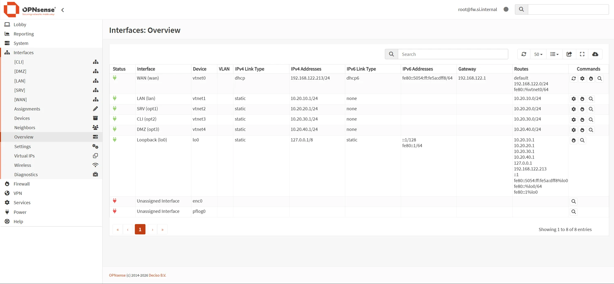
Côté WAN : IPv6 désactivé, réseaux privés et « bogons » bloqués en entrée.

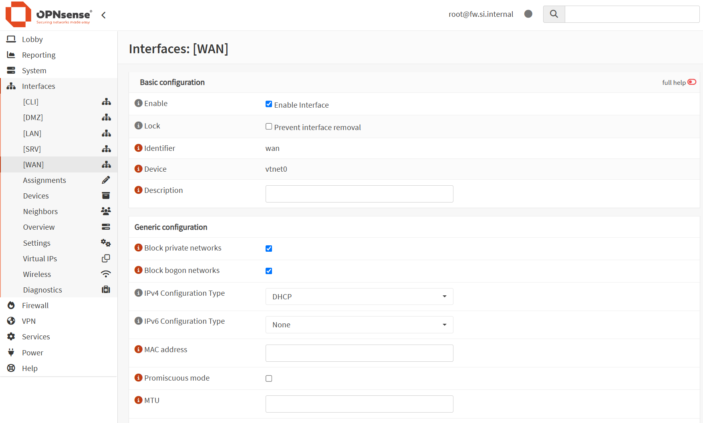
Les règles : tout est refusé sauf ce qui est écrit
OPNsense refuse par défaut tout ce qui entre par une interface sans règle. J'ai d'abord écrit la matrice des flux dans le dépôt, puis saisi les règles. Quatre alias rendent les règles lisibles :
- PRIVES : toutes les plages privées (dont la maison et le NAT de libvirt) ;
- ZONES_SI : les réseaux SRV, CLI et DMZ ;
- MAISON_PUBLIQUE : la Freebox sur son adresse publique (ajouté après la relecture, voir la partie 5) ;
- WEB : ports 80 et 443.
| Zone | Ce qui est permis | Tout le reste |
|---|---|---|
| mgmt | la tour seule (10.20.10.254/32) vers les zones, en SSH et ping ; l'interface web d'OPNsense (règle anti-blocage) | refusé ; les règles « LAN vers tout » d'usine sont désactivées |
| SRV | DNS et heure (NTP) vers OPNsense ; internet en web (80, 443) et NTP | refusé : autres zones, maison, tour, interface web d'OPNsense |
| CLI | DNS vers OPNsense ; internet en web et NTP | idem (les flux vers l'AD viendront à l'étape 3, un par un) |
| DMZ | DNS vers OPNsense ; internet en web et NTP | idem : la DMZ ne joint aucune zone interne |
Dans SRV, CLI et DMZ, la première règle bloque MAISON_PUBLIQUE : les règles sont lues de haut en bas et la première qui correspond gagne. « Internet » s'écrit « destination tout sauf PRIVES » : une VM ne peut donc pas joindre une autre zone ou la maison par la règle internet.
Toutes les règles qui laissent passer sont journalisées, et le refus par défaut aussi : c'est ce qui donne les preuves ci-dessous.

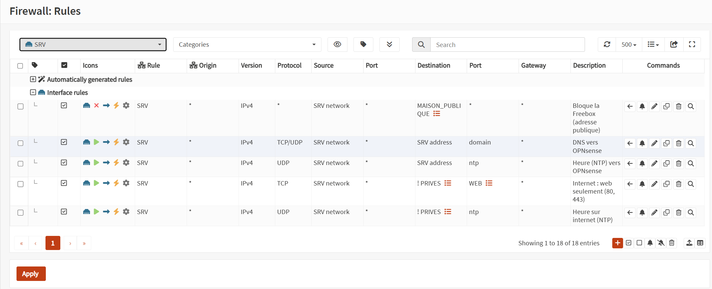

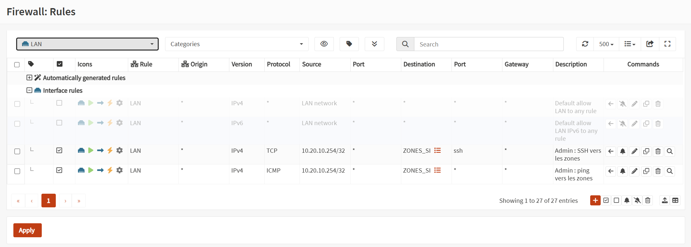
04Tests réussis
Les essais sont faits par un script, lancé depuis la tour : il se connecte à chaque VM jetable et essaie chaque flux. Pour chaque essai, il connaît le résultat attendu et distingue 4 cas : ouvert, bloqué (délai dépassé : le pare-feu jette), refusé (le port répond « fermé ») et erreur (VM injoignable, commande absente). Une VM éteinte ne peut donc plus passer pour « bloquée ». La sortie complète de chaque passage est gardée dans mon dépôt privé.
| Test | Résultat attendu | Résultat obtenu | Preuve |
|---|---|---|---|
| Avant toute règle | Tout est bloqué depuis les zones, même le DNS d'OPNsense | Conforme : 39 sur 39 bloqués, lignes « Default deny » au journal | Fig. 8 |
| Après les règles corrigées | Exactement la matrice | Conforme : 81 essais, 0 écart, 0 erreur | Sortie du script |
| Une zone vers une autre (ping, SSH) | Bloqué | Conforme, dans les 6 sens | Sortie du script |
| Une zone vers la maison (Freebox sur le réseau local, tour, NAT de libvirt) | Bloqué | Conforme | Sortie du script |
| Une zone vers la Freebox sur son adresse publique | Bloqué | Conforme (ouvert avant la correction, voir la partie 5) | Fig. 9 |
| Une zone vers internet | Web (HTTP, HTTPS) et DNS de sa zone ouverts ; ping, SSH, SMTP bloqués | Conforme | Sortie du script |
| Une zone vers OPNsense | Interface web (80, 443), SSH, adresse mgmt et DNS des autres zones bloqués | Conforme | Sortie du script |
| La tour vers chaque VM | SSH et ping ouverts, TCP 80 bloqué (seuls SSH et ping sont permis) | Conforme | Sortie du script |
| OPNsense côté WAN | Interface web et SSH bloqués | Conforme | Sortie du script |
| Une règle n'ouvre que ce qu'elle dit | Règle temporaire CLI vers SRV en SSH : SSH passe, mais ping, TCP 80 et SSH vers la DMZ restent bloqués ; règle retirée : SSH de nouveau bloqué | Conforme | Fig. 10 |
| Contournement par le serveur | Une VM de CLI force une route et l'adresse matérielle du pont pour parler directement à la tour : bloqué | Conforme, et c'est bien la tour qui jette (voir ci-dessous) | Compteurs du noyau |
| Homelab n°1 intact | 157 tests, Traefik, Uptime Kuma, Ollama | Conforme, après chaque changement et après le redémarrage du serveur | Script de contrôle |

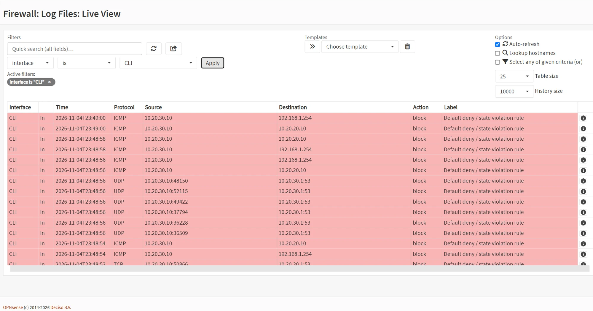

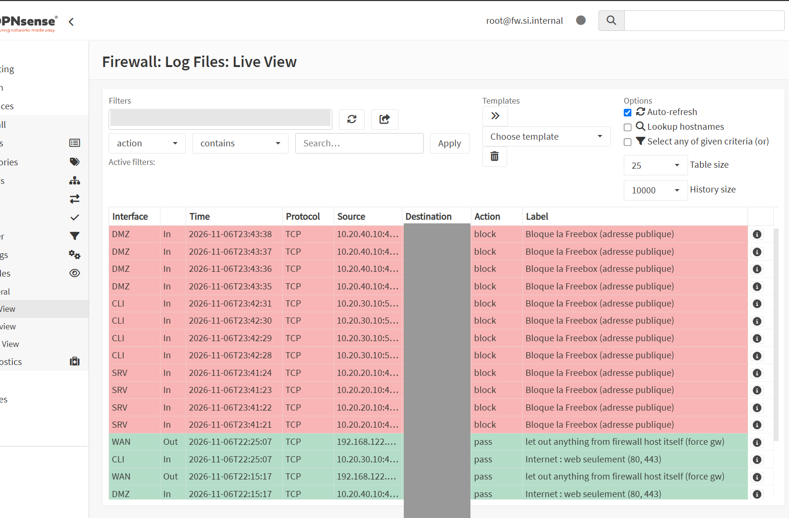

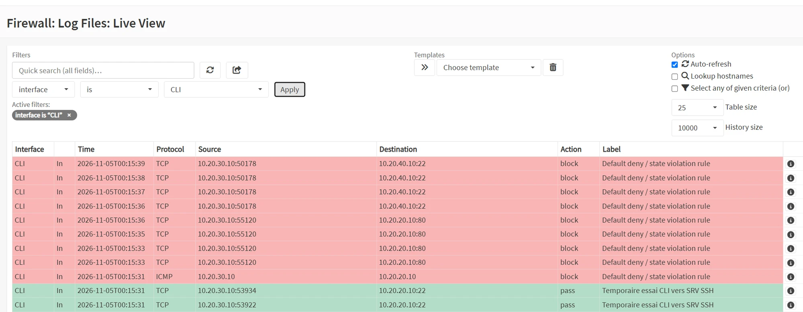
Le contournement par le serveur, en détail
Une VM de la zone CLI est reliée au même pont virtuel que le serveur. Si elle envoyait ses paquets directement au serveur (sans passer par OPNsense), le serveur pourrait les faire suivre vers la maison. J'ai essayé deux chemins :
- par la résolution d'adresse normale (ARP) : le serveur ne répond pas, car il n'a pas d'adresse sur ce pont ;
- en forçant l'adresse matérielle du pont, sans ARP : toujours bloqué, vu de la VM.
Mais « bloqué » vu de la VM ne disait pas qui bloquait : la réponse du serveur aurait aussi pu être jetée plus loin par OPNsense. Les compteurs du noyau tranchent : le compteur des paquets rejetés par le contrôle d'adresse source (rp_filter) prend +12 à chaque essai et +0 sans essai, et aucun ping n'arrive ni ne repart. Le noyau le confirme pour ce paquet : « Invalid cross-device link ». Le même paquet, arrivé par un pont qui a une adresse, serait accepté : la protection tient donc à deux conditions, notées dans le dépôt pour ne pas les casser plus tard : rp_filter actif sur le serveur, et aucune adresse du serveur sur les ponts SRV, CLI et DMZ.
05Problèmes rencontrés et solutions
| Problème | Cause | Solution |
|---|---|---|
| La Freebox joignable depuis les 3 zones sur son adresse publique (Fig. 11) | « Internet = tout sauf les plages privées » laisse passer une adresse publique qui mène à la maison : la box répond sur son adresse publique, et le chemin passe par le NAT de libvirt puis le serveur. Trou repéré à la relecture, confirmé par le script (3 écarts) | Alias MAISON_PUBLIQUE bloqué en tête de SRV, CLI et DMZ. J'en ai profité pour réduire la sortie internet au web et à l'heure (avant : tous les ports, ping compris) et la règle mgmt à la tour seule (avant : Fig. 12 et 13 ; après : Fig. 6 et 7). Résultat : 81 essais, 0 écart |
| Règle « ping » créée en TCP (Fig. 14) | Protocole mal choisi à la saisie : elle aurait ouvert tout TCP de mgmt vers les zones | Corrigée en ICMP ; repérée en relisant la liste des règles avant de valider |
| Règle NTP avec le port en source (Fig. 15) | Champ mal choisi : elle n'aurait laissé passer que des paquets partant du port 123 | Port mis en destination |
| Zone CLI entièrement bloquée (Fig. 16) | Règles de CLI et DMZ oubliées : le refus par défaut a joué son rôle | Règles ajoutées ; le 1er passage du script l'avait montré |
| Règle de blocage de CLI saisie en « Pass » (Fig. 17) | Action laissée par défaut à la création | Repérée sur la capture avant « Apply » (triangle vert au lieu de la croix rouge), corrigée |
| Affectation des interfaces non appliquée (Fig. 18) | L'image nano démarre avec un LAN en 192.168.1.1/24, la plage de la maison ; ma réponse à [y/N] n'était pas « y », donc « non » par défaut | Affectation refaite et confirmée |
| Zones SRV, CLI et DMZ sans adresse (Fig. 19) | Dans OPNsense, une interface configurée ne prend effet qu'après « Apply changes » | Appliqué, puis vérifié sur la liste des interfaces |
| Le script prenait une VM éteinte pour « bloquée » | 1re version : tout échec comptait comme bloqué. Révélé en lançant le script avec les VM éteintes (« No route to host » classé comme un refus) | Réécrit : 4 cas distincts (ouvert, bloqué, refusé, erreur), arrêt immédiat si OPNsense ne répond pas, essayé sur chaque cas |

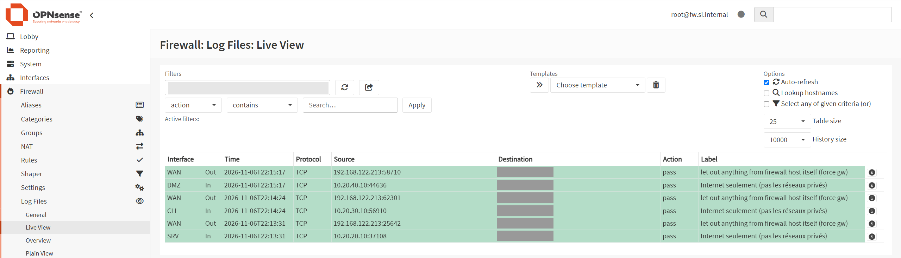

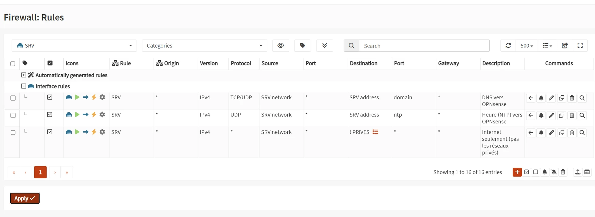

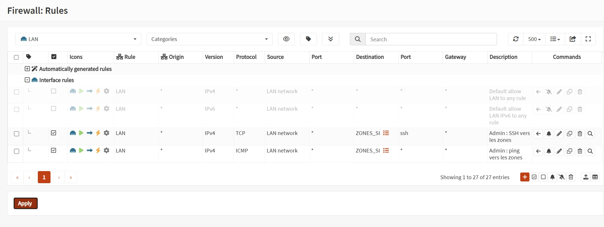

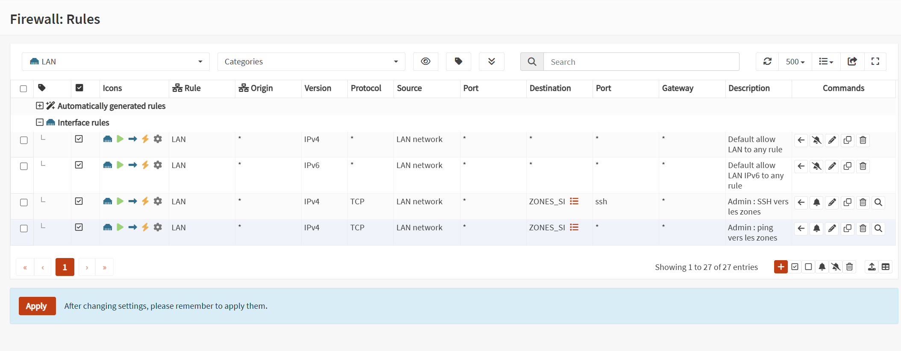

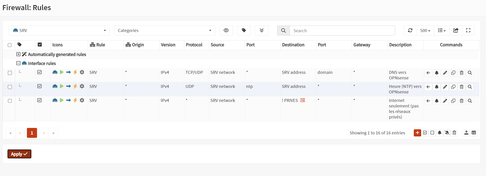

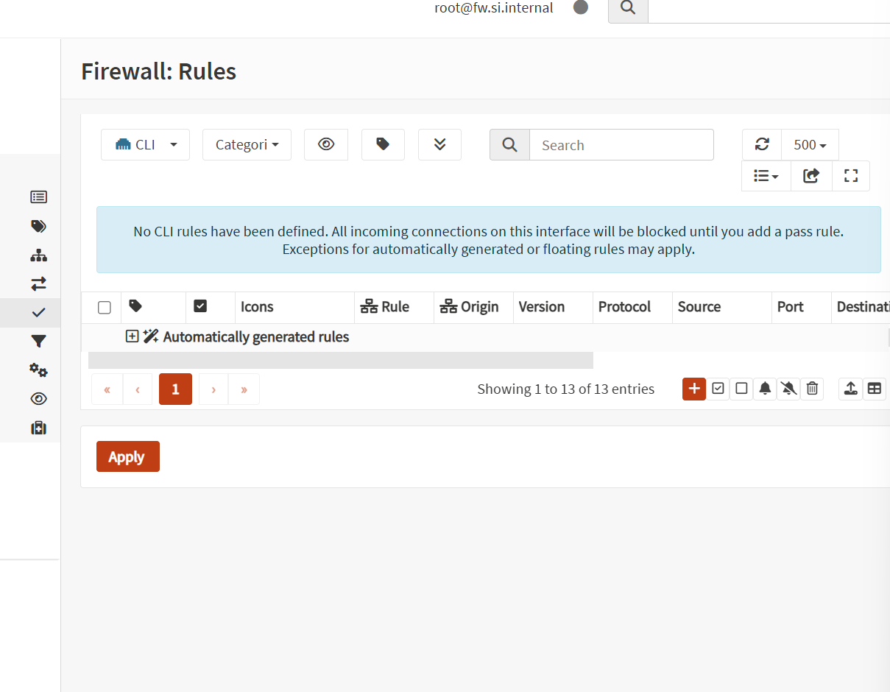

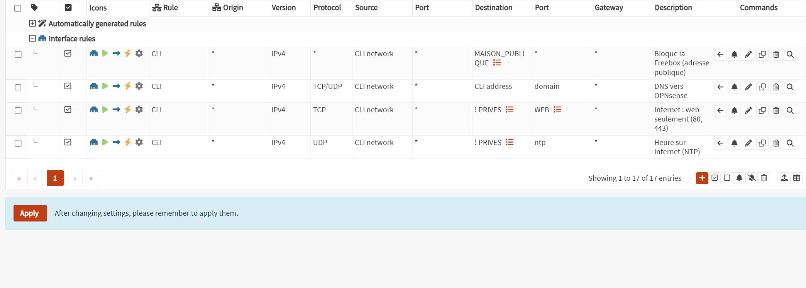

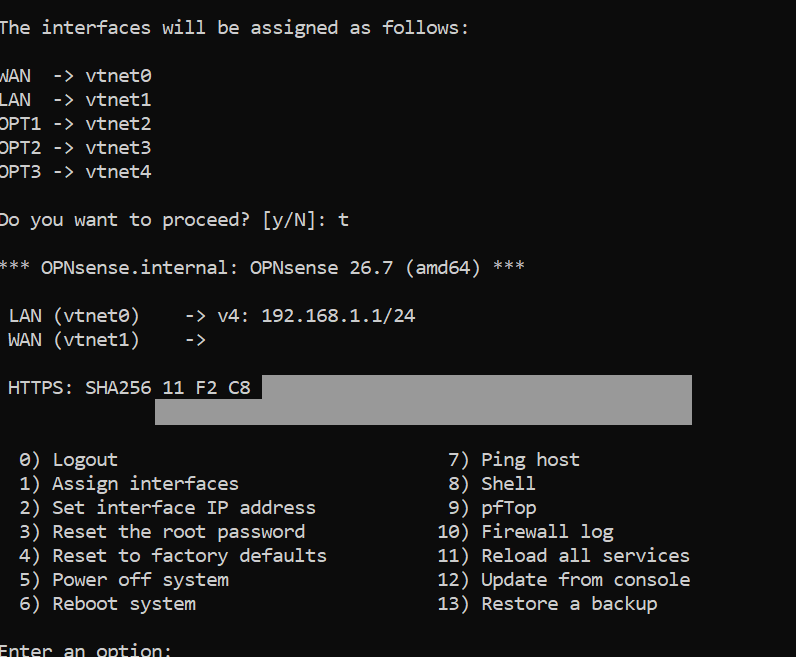

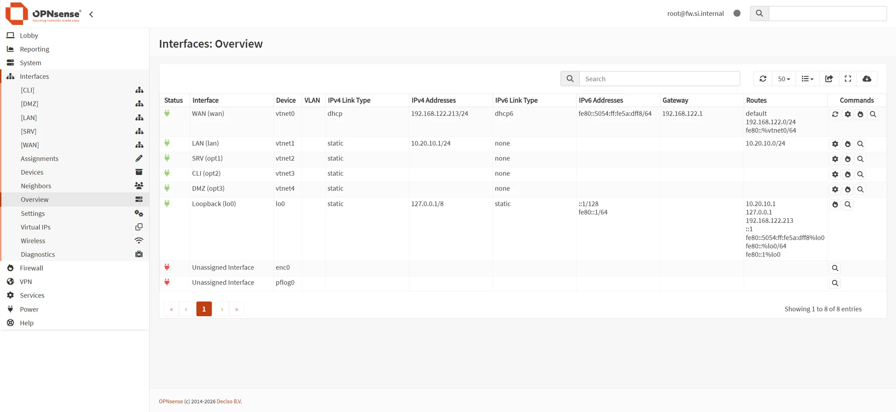
06Ce qui n'a pas été essayé (limites)
- Le passage « avant les règles » (39 essais) a été fait avec la 1re version du script, qui ne distinguait pas « bloqué » de « VM injoignable » ; la capture du journal (Fig. 8) vient d'un autre passage, quelques minutes après.
- Les règles automatiques d'OPNsense (anti-blocage, DHCP, « le pare-feu lui-même sort librement ») n'ont pas été dépliées une à une.
- HTTPS a été essayé vers un vrai site, pas en forçant une adresse précise.
- NTP vers OPNsense (UDP 123) : permis dans SRV, pas encore essayé ; ce sera fait à l'étape 3, avec l'AD.
- Pas de comparaison « réseau plat » avant la segmentation : une VM sur le NAT par défaut joignait la box (constaté à l'étape 1), mais ce n'a pas été rejoué avec le script.
- Contournement par le serveur : je n'ai pas essayé ce qui se passerait sans rp_filter ou avec une adresse sur le pont (c'est justement ce qu'il ne faut pas faire).
- Sorties encore trop larges, fermeture prévue : l'heure (UDP 123) et le web (TCP 80, 443) sont permis vers tout internet. N'importe quel hôte d'internet peut écouter sur ces ports, ce qui laisse un canal possible à une machine compromise. Prévu : à l'étape 3, l'heure donnée par le contrôleur de domaine (lui-même synchronisé sur OPNsense, seul à sortir sur internet) ; à l'étape 4, le web limité à une liste de domaines autorisés. Chacune avec un essai avant et après.
07Ce que j'en retiens
- Écrire la matrice avant les règles, et le résultat attendu avant l'essai : un script qui dit seulement « bloqué » sans savoir pourquoi peut mentir (VM éteinte).
- « Tout sauf les réseaux privés » n'est pas « tout sauf la maison » : une adresse publique peut mener chez soi. C'est la relecture puis l'essai qui l'ont montré, pas la lecture des règles.
- « Bloqué » ne dit pas qui bloque : pour le contournement, il a fallu les compteurs du noyau pour savoir que c'était le serveur, et à quelles conditions.
- Relire avant d'appliquer : 3 erreurs de saisie et un oubli, tous attrapés en relisant les règles ou par les essais. Un pare-feu se vérifie par des essais, pas par une capture de ses règles.